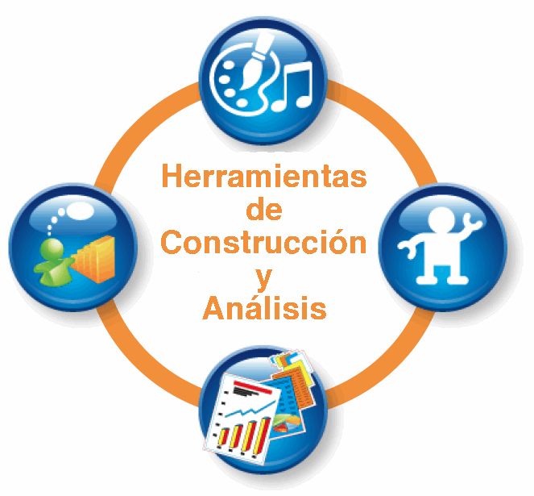
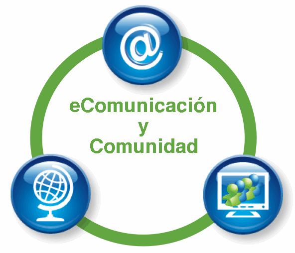
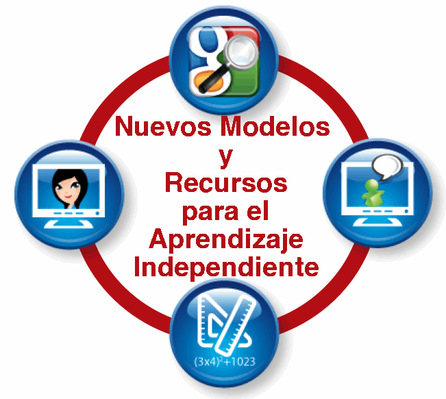
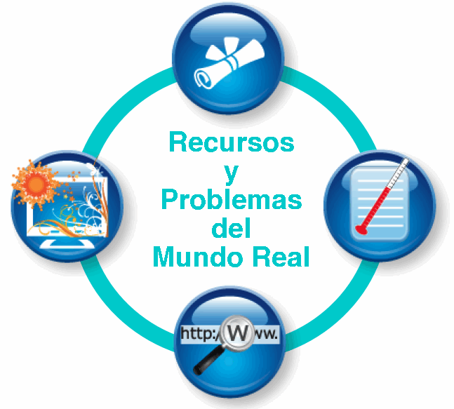
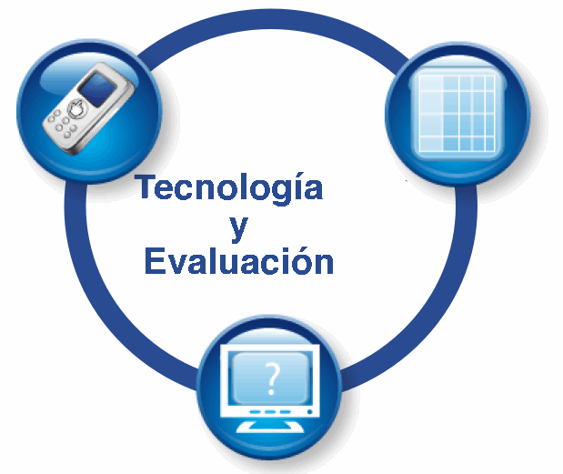
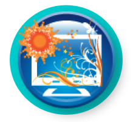
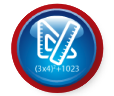

|  |  |  |  |  |
[Volver a la página principal del Rango de Uso] [Ver escenarios para Herramientas y Recursos para Problemas del Mundo Real]
Problemas y Recursos del Mundo Real: Incluye tecnologías y recursos que
permiten a los estudiantes involucrarse en problemas, proyectos y recursos que tratan sobre
conceptos disciplinarios centrales de manera que emulan el trabajo de profesionales de un modo
apropiado para la edad de los estudiantes.
Recursos en línea para investigación
[cursor sobre imagen para definición] |
Materiales de Fuentes Primarias
[cursor sobre imagen para definición] |
Simulaciones y Modelización  [cursor sobre imagen para definición] |
Herramientas para Recolección de Datos
[cursor sobre imagen para definición] |
Escenarios para Problemas y Recursos del Mundo Real
| Título (click en el título para ver el escenario) | Categorías incluidas en el escenario [cursor sobre imagen para definición] |
Nivel | Área de Contenido |
| Animales y su Medioambiente | Primaria | Ciencias Naturales | |
| Primeros años de secundaria | Ciencias Sociales Ciencias Naturales |
||
| Calculando el Área de los Rectángulos |  |
Primaria | Matemática |
| Figuras Geométricas |  |
Primeros años de secundaria | Matemática |
| Campaña de Reciclaje | |
Secundaria | Ciencias Naturales |
| Explorando la Roma Antigua | Secundaria | Ciencias Sociales | |
| El Diario de Ana Frank | Primaria | Lengua y Literatura | |
| Fuentes Primarias para la Historia Africana | Primeros años de secundaria | Ciencias Sociales | |
| Parque Recreativo Municipal | |
Primeros años de secundaria | Ciencias Sociales |
| Sistemas Interactivos de sondeo inmediato en clase de Matemática | |
Primeros años de secundaria | Matemática |